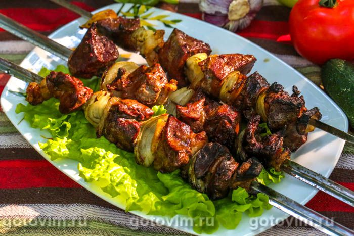

Как приготовить вкусный шашлык: 3 лучших рецепта
Шашлык в луковом маринаде
Простой рецепт для настоящих ценителей. Идеально работает со свининой, особенно с шейкой. Неплохо
получится
и с говядиной, но это должен был очень нежный филейный кусочек.
Необходимо нарезать мясо крупными кусками, репчатый лук измельчить. Лука понадобится много — на килограмм
мяса до полкилограмма лука. Перемешать куски мяса с мелко порезанным луком и поставить в холодное место на
ночь. Утром добавить специи: черный и душистый перец, кориандр, майоран.
Лучше всего, если это будут
свежемолотые специи. Перед тем, как вы станете нанизывать мясо на шампуры,
добавьте в него соль. Делать это
заранее не стоит, поскольку соль высушивает мясо. Для эстетики можно перемежевывать мясо на шампуре с
кружками помидора или кольцами лука. В самом конце можно добавить эстрагон (тархун) или орегано — так как их
аромат исчезает под действием жара.
Ингредиенты:
- Свинина 1кг
- Лук репчатый 1кг
- Перец черный молотый
- Соль
- Приправа для мяса
- Подсолнечное масло 50мл
Шашлык в газировке
Отличный способ экспресс-приготовления шашлыка, на случай внезапных гостей. Порежьте мясо, обильно
пересыпьте его специями. В данном случае отлично подойдут смеси типа хмели-сунели, можно бросить пару
веточек розмарина. Залейте мясо газированной минеральной водой и, — вуаля! — через 40 минут шашлык
готов.
Благодаря углекислоте специи быстро проникают в волокна мяса, оно мгновенно пропитывается и становится
мягким.
Слейте минералку, добавьте соль и 3-4 столовых ложки растительного масла, лучше всего
оливкового
"экстра вирджин". Этот рецепт отлично размягчает говядину и баранину. В самом конце приготовления можно
посыпать шашлык смесью душистых трав или орегано.
Для этого рецепта важно не переборщить — если вы передержите шашлык в минералке, кушать вам придется
абсолютно сухое и совершенно безвкусное мясо.
Ингредиенты:
- Минеральная газированная вода – 1 литр
- Лимон – 1 ст. л.
- Перец черный молотый
- Соль
- Приправа для мяса
- Подсолнечное масло 50мл
Шашлык с французской горчицей
По сути это тот же маринад в собственном соку: нарезаете мясо крупными кусками и маринуете со специями. На 2 килограмма мяса добавляете 100-150 граммов французской горчицы. Специи можно выбирать подушистее, поскольку горчица обладает собственным ароматом, который может их заглушить. Соль добавляем уже перед нанизыванием на шампур. Волшебные свойства горчицы не лишне знать каждой хозяйке — она может спасти мясо любой жесткости, сделав его мягче. А ароматные зернышки французской горчицы придают блюду легкую пикантность и аппетитно похрустывают после запекания.
Ингредиенты:
- Свинина — 600 г
- Лук репчатый - 200г
- Соевый соус — 3 ст. л.
- Горчица — 3 ч. л.
- Уксус — 1 ст. л.
- Подсолнечное масло - 1 ст. л.